Dance Instructional Facility, Purchase, New York, 1971-1976
Gunnar Birkerts and assciates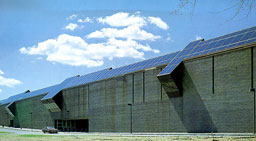
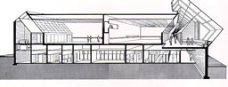
GA Architects 2
William Marlin & Yukio Futagawa
A.D.A. EDITA Tokyo |
Dancers have very high and special demands
for the floor, orientation-possibilities, sounds, and the condition
of the air. But ideally dancers should be dancing in the sunlight
surrounded by nature without restrictions. To combine these demands
was quite a challenge for the architect. The dancestudio's he
designed are surrounded by a corridor, offices and seminar rooms.
The offices and seminar rooms have a sloped top towards the corridor.
These sloping tops reflect daylight into the corridor and through
a glass wall facing the reflecting tops into the dance studio.
On the first photograph on the right the corridor can be seen
and on the second one the interior of the dancestudio with the
glass wall facing the reflectors.
|
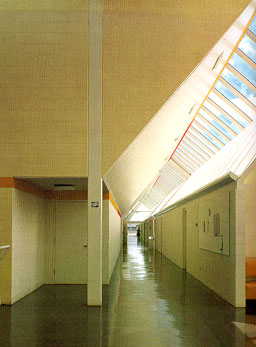
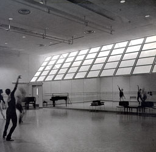 |
A House in Castlecrag, Australia
Nicholas Mossop Carter and Associates
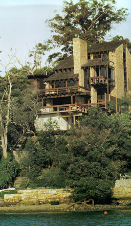
Houses by the sea
Telleri |
The architect has tried to integrate this
house with its natural surrounding by the use of natural materials
like stone and wood. Balconies, roofs and terraces give the house
a dynamic, disordered composition. The windows are very various-sized.
The architect has played with the different views to the sky,
shore and the trees. The double-height living room is bright.
A large window below provides for daylight and a view to the
bay. The window above brings the light more deeply into the room. |
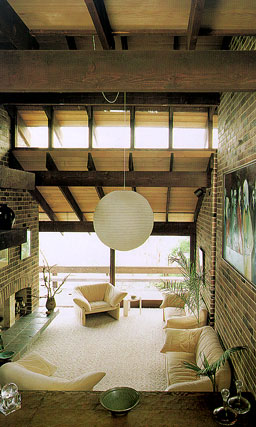
|
|
Crane Park Izumi, Kagoshima, Japan, 1995
Nikken Sekkei Ltd.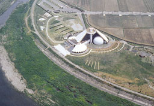
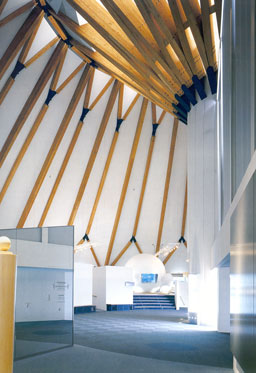International
Architecture Yearbook
Images Australia |
This building is designed to serve as a comprehensive
crane museum. The museum has to attract tourists year-round and
has to serve as a place for study. The building is located in
a large riverbed of the Yonemozu River. The designer has tried
to blend the building with its surroundings. The structure of
this building consists of reinforced concrete, a steel frame
and wooden beams to carry the roof. The roof construction can
be seen on the second picture on the left. This is a photograph
of the interior of the exhibition hall. The picture on the right
shows the interior of a passage to the exhibition hall. The roof
seems to float above the left wall so light can enter the passage.
Artificial light coming from spots in the floor lightens up the
left wall so the distribution of light becomes more equable.
|
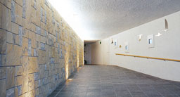 |
|
House on NSW South Coast, Australia
Glenn Murcutt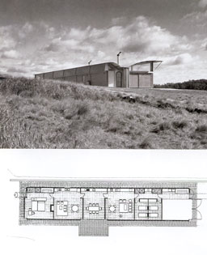Award Winning Australian Architecture
Neville Quarry |
The house is standing on a gentle slope
without trees or other prominent features. The roof of the house
has also a slope opposite to the slope of the surroundings. In
that way the house is protected from strong sea winds (coming
from the left on the left photograph). The right side is the
open side as can be seen on the right photograph. The roof has
an overhang to protect the upper window from direct sunshine
when the sun stands too high. The window near the ground has
louvers to regulate the incoming sunshine. When closed variant
A3 appears otherwise variant A4. Because of the sloping roof
the ceiling catches more daylight and becomes a little lighter.
The house is carefully detailed and contemporary protective coatings
have been used to reinsurance longevity. As can be seen on the
second picture on the left the plan is linear which characterises
the work of Murcutt.
|
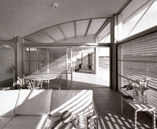 |
|
|
|
|
|
|
|
|
|
|
|
|